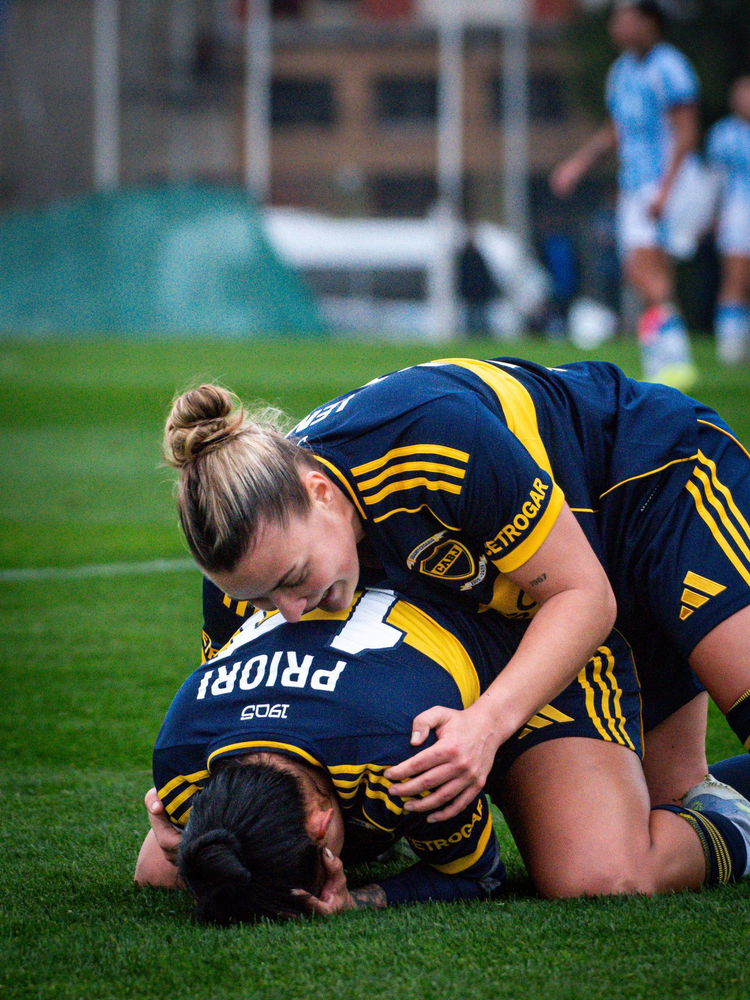

Boca lidera con 32 puntos y le queda un partido. Talleres tiene 27 y dos por jugar, uno de ellos ante el puntero.
 Talleres festeja en el Clausura. Imagen: Club Atlético Talleres
Talleres festeja en el Clausura. Imagen: Club Atlético Talleres
El Clausura se define entre dos. Con la Fecha 14 cerrada, Boca encabeza con 32 puntos en 14 partidos y le falta un solo encuentro. Talleres es tercero con 27 puntos en 13 partidos y tiene dos por jugar. Banfield (28 puntos, máximo posible 31), San Lorenzo, Racing y San Luis FC ya no tienen cuentas matemáticas.
Si Boca gana o empata en su último partido, es campeona. Con una victoria llegaría a 35 puntos y con un empate a 33, una cifra que Talleres no puede alcanzar si no le gana. Su rival en esa última fecha sería justamente Talleres, según el cruce espejo del Apertura, cuya programación todavía no confirmó la AFA.
Boca, puntera del Clausura, en Casa Amarilla.Las Matadoras llegan a un máximo de 33 puntos, uno más que los 32 de Boca. Para ser campeonas tienen que ganar el partido que tienen pendiente y también el último, ante Boca. Si fallan en cualquiera de los dos, aun ganándole a Boca, se quedan con 31 puntos o menos y el título es xeneize.
 Talleres tiene dos partidos por jugar. Imagen: Club Atlético Talleres
Talleres tiene dos partidos por jugar. Imagen: Club Atlético Talleres
Boca se quedaría en 32 puntos. Entonces todo dependería de Talleres: si ganó antes el pendiente, el triunfo ante Boca le daría 33 y el título. Si no lo ganó, Boca igualmente sería campeona. No hay posibilidad de empate en puntos entre ambas.
En el Apertura, Boca y Talleres empataron 1-1 en la Fecha 15, el 22 de julio, en Casa Amarilla. Racing quedó campeona de aquel torneo. Boca viene de ganarle 2-0 a Ferro y Talleres perdió 1-0 con Lanús, un resultado que le dio aire a las xeneizes.

Boca, en un partido del Clausura.Seguir leyendo
Seguinos en redes